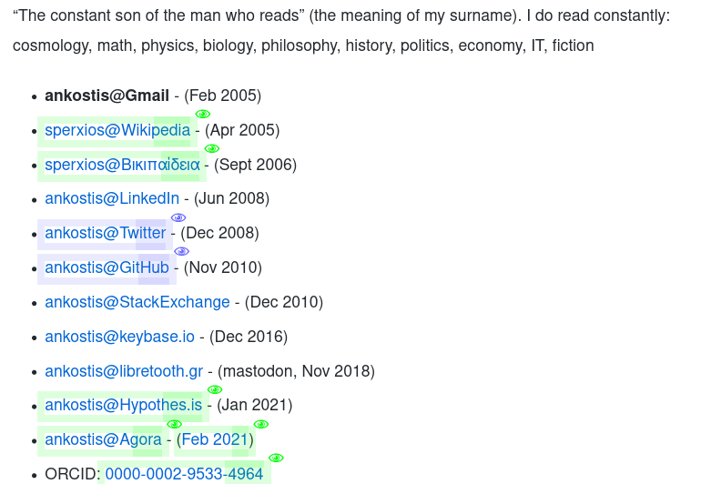
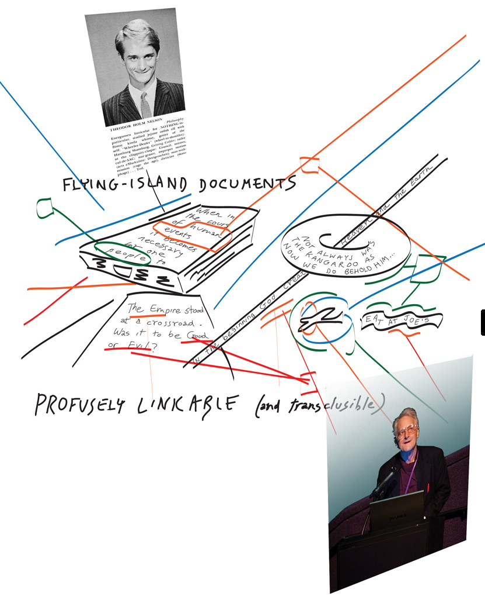
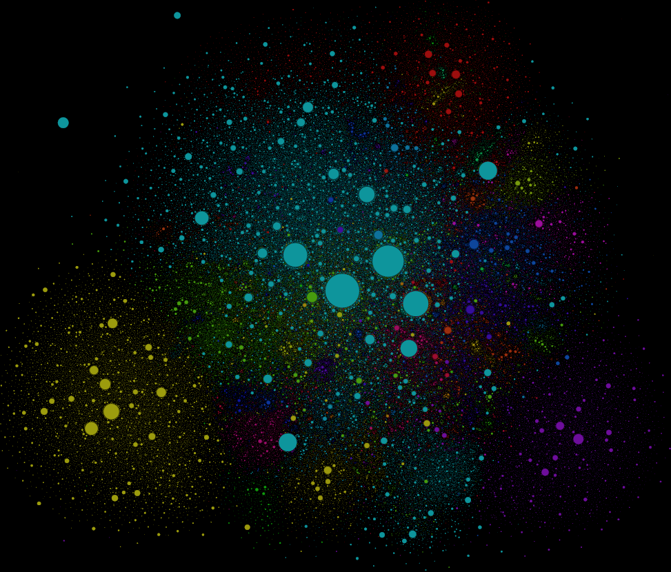
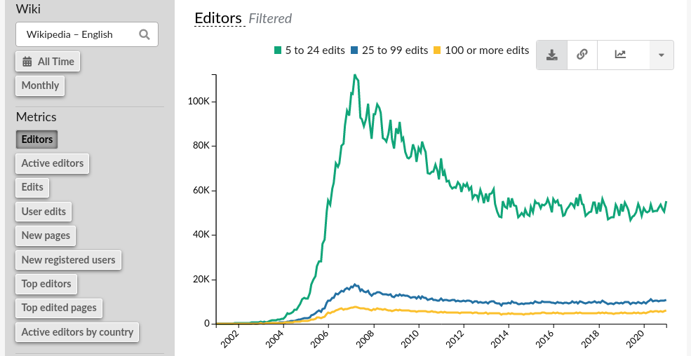

- title
Reviving the Web (and Democracy within)
- skip-help
true
- auto-console
false
- slide-numbers
true
- css
presentation.css
Who? What? Why?
A tired programmer...
...but i still like it!

Καλησπέρα,
Ονομαζομαι Κωστης Αναγνωστοπουλος,
ειμαι ενας εμπειρος προγραμματιστης, σε γονική άδεια :-)
Είμαι εδώ για να ΜΑΣ θυμισω, γιατι το web ηταν μια ριζοσπαστική ιδεα,
που θα μας βελτίωνε τις ζωές μας, συλλογικά
(κατά συνέπεια και τις πόλεις μας),
πότε χάσαμε αυτο το οραμα αυτό στην πορεία?
Και τι μπορούμε να κανουμε σήμερα, για να το ξαναβρουμε.
- data-y
r1000
(1945) The conception of the Web
(without Ritalin®)
- Vanevar Bush conceived the "memex" project based on "linked" microfilms. Impractical!
... but was Ted Nelson’s hyperactive(ADHD) mind
- infused with ideas which he could not control...
- ... so he let them loose, and envisioned a system to “interconnect” them all.

Εν αρχήν, λοιπον, ηταν αυτός εδώ ο τύπος, ο Ted Nelson.
Υπαρχουν πολλές “αρχες” για την ιστορία των υπολογιστών,
αλλα αυτή εδώ ειναι η πιο παραξενη που εχω ανακαλύψει.
Γιατι αυτός ο τυπος το 1963 ήταν ενας νεαρός που έπασχε απο την πρωτοτυπική μορφή της ΔΕΠΥ.
Δεν μπορούσε να συγκεντρωθει, και πήδαγε από τη μία ιδέα στην αλλη. Συνεχώς.
Γιατί το μυαλό του πλημυρίζει από ιδεες (δεν υπηρχε Ritalin τοτε :-).
Σκεφτηκε λοιπόν αντι να παει κοντρα στη φυση του, να φτιαξει ενα συστημα
που να αντικατοπτρίζει και να βοηθαει τη σκεψη του.
Το ονομασε “μη-σειραϊκή γραφή” αλλά τελικά κράτησε τον πιο πιασαρικό όρο:
“hypertext”.
- data-x
r800
- data-y
r0
(1963) Project Xanadu
...that never came to be.

- Ted Nelson coined the term “hypertext”, project “Xanadu” was to implement it.
- an open, collaborative, never-ending set of interconnected records...
- that has not yet materialized :-)
Βασικό του χαραχτηριστικό ήταν η ανοιχτότητα!
ΟΛΟΙ μπορούν να αναπτύξουν & να εξελιξουν οποιο σημειο του περιεχομένου επιλεξουν.
Ολες οι καταγραφες αποθηκευονται και ενοποιούνται
σε ενα λειτουργικό υπερσυνολο.
Αυτό ηταν το Xanadu.
Πολύ δουλεια.
Ακόμα και σημερα ο Ted, και καποιοι πιστοί του προγραμματιστες,
καπου στον πλανητη, προσπαθούν ακόμα να το τελειώσουν, ...
- data-x
r1000
- data-y
r-300
(1985) GNU, Free for All!
...for the programmers, at least.
- The Tragedy of the Commons plagued economist minds since the 19th century.
- Richard M. Stallman changed the way we cooperate on and share common virtual assets.
- Open-source movement (Eric Raymond) proliferated to all works of society.
If only real life institutions had followed through...
...why not, government ministries & local-councils?
Το 1985, ο Richard Stallman μας χαριζει την εξοχη ιδέα του,
μετουσιωμενη σε νομικό κείμενο,
την GPL.
Αυτη μας ανοιξε την πορτα σε συνεργασίες μεταξυ αγνώστων,
χιλιάδες χιλόμετρα μακρυα, από τη μια ακρη του πλανήτη στην αλλη.
Αρχικά ΓΙΑ software, μετά ΓΙΑ εργα τεχνης, πιο μετα, για ολα.
- data-y
r-600
(1989) The birth of the Web
...by Tim Berner Lee @ CERN
(hint: still alive today, still fighting the same cause)

- While open-ended, ...
- it was read-only, localized, and statically linked.
- The client-server model splitted people into providers & users.
- Users had significantly less power!
Το 1989, 20 χρονια αργοτερα, ο κυριος Λι, “αντιγραφοντας” την ιδεα του Ted,
σηκωνει τον “παγκόσμιο ιστο” (μεγάλη επανασταση)
χωρίς βεβαια να ειχε λυθει το ζητημα της παγκοσμιας συμμετοχής!
Καθε web-σερβερ ξερει μονο τα του οίκου του, ειναι read-only,
και τα links ειναι στατικα και προαποφασισμενα,
συχνά “σπανε”.
Φημολογείται πως το ’93, στο Mosaic (ο 1ος browser),
ΠΑΛΙ δεν προλαβαν να τελειωσουν ενα peer2peer Web augmentation layer
από τον καθε χρηστη προς ολους τους άλλους ...
- data-y
r-300
(2001) Wikipedia
By the People, For the people
...last call!

- Universal library WE envisioned for ages.
- But very few other, truly global initiatives materialized since (e.g. biology, IT, but no politics or economy)
Το 2001 εχουμε την Wikipedia. Που πατώντας στα προηγούμενα, προσπαθει να
ενωσει την παγκοσμια γνωση.
And that’s it!
Ητανε το τελευταίο μεγάλο "δημόσιο" project που αποπειράθηκε να διευκολύνει την παγκόσμιο κοινοτητα
να συμμετέχει, επί ίσοις όροις στο internet.
Εκει στραβωσε το πραμα.
Εκεί εγκαταλείψαμε!
- data-x
r400
- data-y
r800
Discussions that mattered were already happening somewhere else...
- data-x
r0
- data-y
r1000
- data-rotate
90
The Appropriation of the Web started in the '80s
«Walled gardens»
«φοβοῦ τοὺς Δαναοὺς καὶ δῶρα φέροντας»
all your data belong to us!
- 1980: Microsoft: MS-DOS, Windows, GitHub(?)
- 1998: Google: google, Gmail, Android
- 2001: Apple: MacOS
- 2004: Facebook: fb
- ...
- 1974: NSA: internet(TCP/IP) :-)
Στο μεταξυ το ’98 ειχε ήδη φτιαχτεί η Google,
η παντοδυναμη μηχανή της μας υποσχόταν πως ολα τα blog θα “μετρήσουνε”,
και καθε σελίδα θα εχει το μερτικό της στον παγκοσμιο ιστο.
Αλλα επειδή αυτό φυσικά ήταν μια φενάκη,
μετά ήρθαν το facebook, twitter, instagram,
και εκει σταματάν οι γνωσεις μου, υστερα το "χαος".
Και εκεί αρχινάν τα προβλήματα....πως να τους αντικαταστησουμε?
- data-x
r200
- data-y
r-2800
- data-rotate
-90
Free-software fought back!
..with distributed software to Reclaim the Web!
- Web 2.0,
- p2p
- Distributed Ledgers
- Torrents, Tor
-
- and help us το reclaim our data
- ... to build personal gardens (of knowledge)
- ... to share & liberate them
- ... fully under our own control.
Και εκει ξεκιναν οι λύσεις
Το αποπειραθήκαμε το 2000 με τα blogs ... δεν φτούρισαν.
Αλλα το ξερουμε, η λυση αυτή ειναι, να γινουμε ολοι παραγωγοι,
(όμως να μας ανηκουν τα μεσα παραγωγής, σωστα? ;-)
Αλλά και να μπορούμε να μοιραστούμε τα προϊόντα μας, ευκολα.
Και φυσικά ΠΡΩΤΑ ππορεποει να παρουμε πισω τα δεδομένα μας!
Και ΤΑ FACEBOOKS, σιγουρα δεν θελου κατι τετοιο!
Τα APIs συνεχως κλεινουν το ενα μετα το αλλο
(πίσω από "paywalls")
- data-x
r800
- data-y
r1000
- data-rotate
0
But what about "us", humble users?
TODO: αυριο το live demo!
Μας λειπουν βεβαια και καποια "προχωρημενα" εργαλεια,
για server-less για να κανουν την ενασχοληση μας παραγωγικη.
Για παραδειγμα, ψαχνωντας για την παρουσιαση,
εφτιαξα το tag ιντερνετ
- data-x
2600
- data-y
800
- data-scale
4.0
- data-z
1000
- data-rotate-x
-60
Thank you
27 Feb 2021, Phaos space
Kalamata
- 1945: Vanevar Bush (project “memex”)
- 1963: Ted Nelson (project “Xanadu”)
- 1985: Richard Stallman (“GNU Manifesto”)
- 1989: Tim Berner Lee (“World Wide Web”)
- 2001: Jimmy Wales (“Wikipedia”)
- data-x
2800
- data-y
-200
- data-z
1200
- data-rotate-x
0